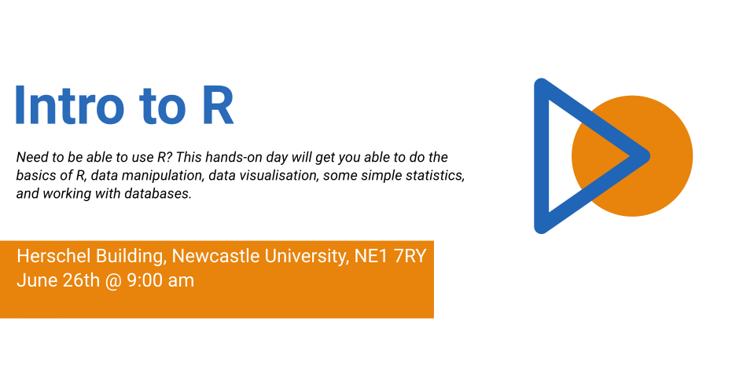

R and Data Science activities in London, June 27th – 29th
Locke Data will be up to some shenanigans of various stripes in the big smoke. We hope to see you at some of them!
June 26th — Monday
Introduction to R (Newcastle)
I won’t be in London for this but I’ll be doing a day of Introduction to R in Newcastle. This is supporting the local user groups and costs up to £90 for the whole day.

June 27th — Tuesday
Data Science Executive Briefing
I’ll be teaming up with onezeero to host an Executive Briefing, offering senior management the opportunity to get a buzzword-free and FUD-free overview of what data science is, ways it can help organisations, and what sorts of things would help ensure they can implement data science with minimal risk.
If this sounds like something you want to attend, or get some senior people at your organisation along to, send Dominic an email at dom@onezeero.co.uk.
Data Science Technologies event
In the evening, I’ll be talking R and SQL Server for real-time predictions at a new meetup being hosted by Winton called Data Science Technologies.
If you’re interested, you can register on the Meetup

June 28th — Wednesday
R and Microsoft training day
I’ll be delivering a training day helping people put R into production using Microsoft products.
Working with Jumping Rivers, there’s a week of training available in London.
- June 26th: Introduction to R
- June 27th: Programming with R
- June 28th: R and Microsoft
- June 29th: 2-day Advanced R Programming
On my R with Microsoft training day we’ll look at how we can use R Server to cope with large data volumes and parallel computations, then we’ll look at embedding R in various services to enable applications and users to make use of our R script.
The day is very practical with exercises along the way to ensure you come out of the training having experience doing. As a result, you’ll need to bring along a laptop and you should already be able to write R code at least at a beginner level.
Find out more about the course and register on JumpingRivers.com
June 29th — Thursday
Chat over coffee
Fancy grabbing some coffee? Help me recover from some hard work by grabbing a coffee with me. Up to 4 people can book the same slot so that I can introduce folks – but if you want to talk one on one, let me know. Go Coffee!!

PowerBI User Group
In the evening, I’ll be delivering a session on how R can solve PowerBI pain points at the London PowerBI User Group. If this is of interest, you can RSVP on the meetup.